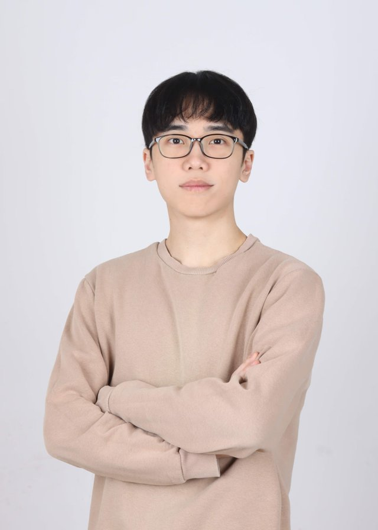

Game Designer
Hi, I'm Hoseung Kwack.
I'm a game designer working across systems, UI, narrative and audio, and I build what I design.
I'm in the final year of the Honours Bachelor of Game Design at Sheridan College. Over the last two years I've designed and shipped game jam projects, including a one-button puzzle game, written a branching narrative, and I'm now on our capstone, IntoTheShadow, heading to Steam in 2027.
Working in more than one area has shaped how I design. Building the UI for a system shows me where players will misread it, and writing the music for a mechanic shows me how it should feel. I take ideas to a playable build early and let that decide what stays.
I'm looking for a game design role starting in 2027.
Experience
- IntoTheShadow, Capstone · Systems, audio and VFX
Three Wheeling Whiteboards, 5 people, Sheridan College · 2026 to 2027
Adaptive music system in FMOD, VFX, UI and character animation for a 2D combat platformer. Also handle branch integration for the team's Unity project. - Game Designer and Developer · Experiential Learning Project (work term)
Sheridan College · Summer 2026
Shipped three playable WebGL games in short development cycles, including Cents for Sense, which won Best Use of Theme.
What I design
Systems and balance
Core loops, economies and tiered progression, checked in playable builds.
UI and visual design
Interfaces that stay consistent across scenes, and feedback that makes hidden rules visible. Pixel art in Aseprite.
Narrative
Branching structure, character and setting documents, scripts written before implementation.
Audio
Adaptive music tied to gameplay events, and input sounds designed alongside the mechanic.
Education
Honours Bachelor of Game Design
Sheridan College, graduating 2027
Recognition
Best Use of Theme, YOU CAN PLAY THIS GAME JAM
Noodle Goose Games, 2026
Tools
- Unity, C#, Git
- FMOD Studio, REAPER
- Aseprite, Spine
- Twine, Celtx, Miro
Languages
Korean, English